塞缪尔·毛茨是近年来以色列燃起的影坛新秀。
2009年，他的第一部处女作《黎巴嫩》便斩获了当年威尼斯影展最高荣誉的金狮奖。
这是一部风格化非常强烈的反战作品，战场上，四人一组的坦克车队历经艰险，已成功驶离叙利亚的驻扎阵营，主人公平安的消息通过无线电传达给了在老家的母亲。
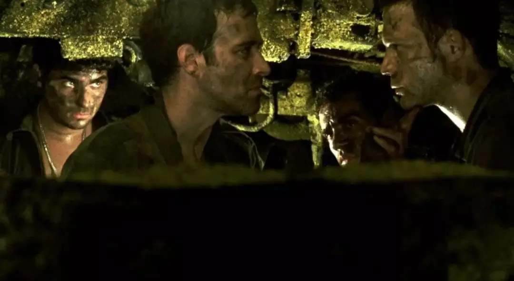
可是观众一不留神，主人公已成为俯躺在坦克车废铁堆中死不瞑目的捐躯者。
对于生死一瞬间的战争而言，死亡与生存仅是瞬息间的事何须见怪，但对于家庭来说，得知儿子平安的短暂喜悦与随即而来的长远悲怆相比，这样的捷报又是何其讽刺。
这就是战争的残酷与荒谬！
导演本人曾在1982年参加过黎巴嫩战争，这段经历在他心中留下了很大的心理阴影和思考。
2007年塞缪尔·毛茨开始创作剧本，2009年处女作《黎巴嫩》惊艳世界。
时隔八年，毛茨第二部反战作品《今夜跳舞不打仗》（又名：狐步舞）再次在威尼斯影展大放异彩。
有意思的是，在去年的威尼斯电影节上，《今夜跳舞不打仗》的有力角逐对手恰好也是反映黎巴嫩战争冲突的《羞辱》。
最终两部电影都取得了不错的成就，《今夜跳舞不打仗》获评委会大奖银狮奖，而《羞辱》获最佳男演员奖。
《今夜跳舞不打仗》沿袭了《黎巴嫩》的形式风格和反战主题，通过意味深长的三幕剧讲述了一个荒谬无力的故事。
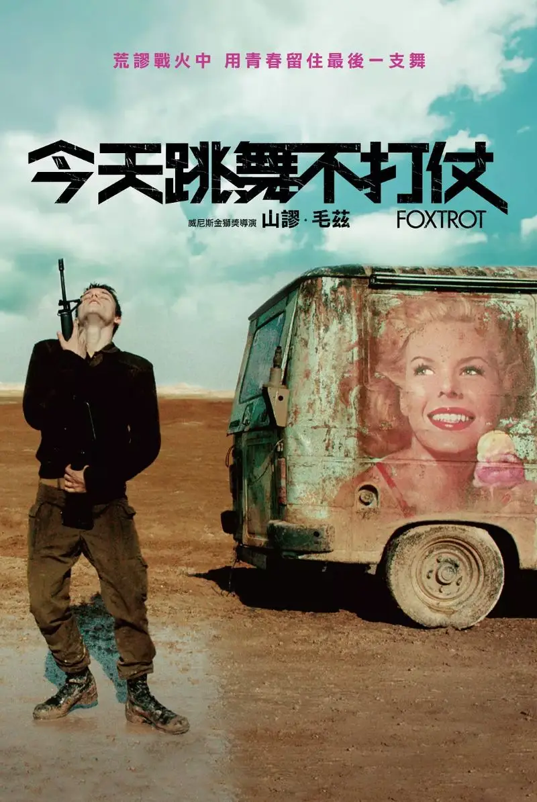
-01- 父亲
几个训练有素的军务人员来到一个家庭。
敲开门后，他们立即给猝不及防的女房主一针药物，女人便陷入到昏迷中。
接着，军务人员冷静地告诉男房主麦可，你的儿子乔纳森在战场上壮烈牺牲。
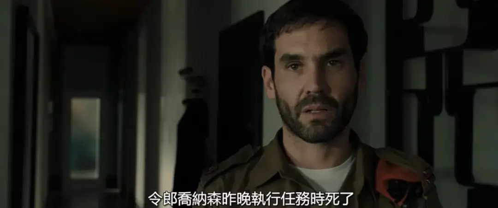
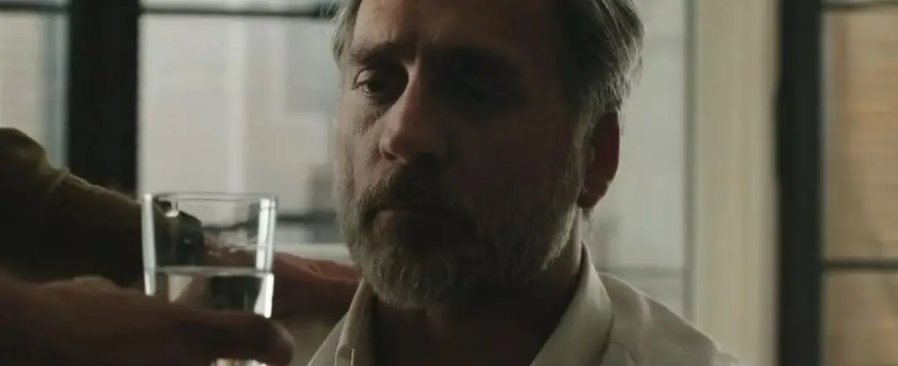
为防止家属因为突如其来的噩耗而有所不测，军务人员告诉麦可，要按时喝一杯水，并为麦可在手机上设置了闹铃提醒。
等麦可情绪有所缓和，紧接着军队拉比告诉麦可他儿子丧葬的具体细节，让麦可明天下午参加儿子的丧礼。
这一整套流程有条不紊、非常专业，但是总感觉怪怪的，似乎这是军方在按照固定程序处理一个报废的物品，而不是一个人的死亡。
从中感受不到任何情感，麦可也找不到可以宣泄情绪的缝隙。
悲痛明明就在那里，却又不得不隐匿于僵硬的动作和冰冷封闭的房间中，这着实令人压抑。
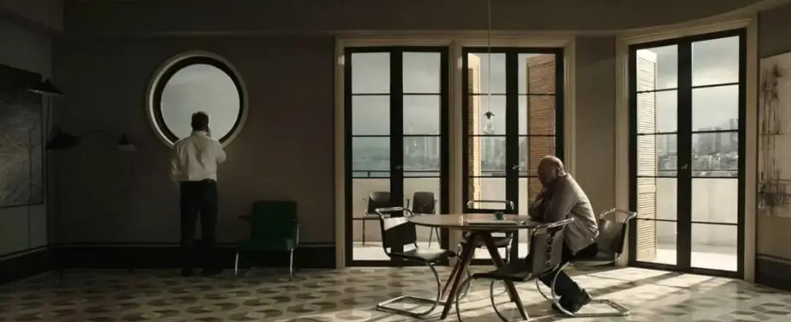
当天下午，军务人员再次上门却告诉麦可，原来他们搞错了，麦可的儿子乔纳森并没有死去，而是另一个同名的“乔纳森”牺牲了。
还可以这么开玩笑！
压抑了一整天的麦可忍无可忍，他向军务人员咆哮，要求军方立马将儿子送回到自己身旁。
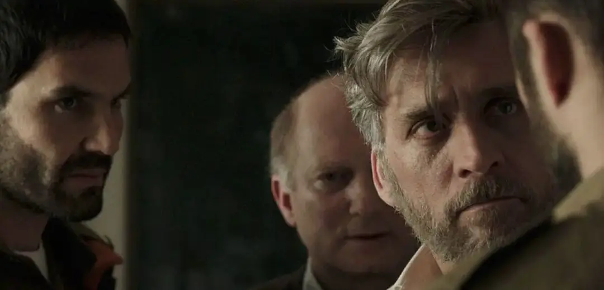
-02- 儿子
画面从封闭压抑的室内转到宽旷荒凉的沙漠。
麦可的儿子乔纳森并不是在战场上奋勇杀敌，而只是蜷缩在一个集装箱里看守关卡。
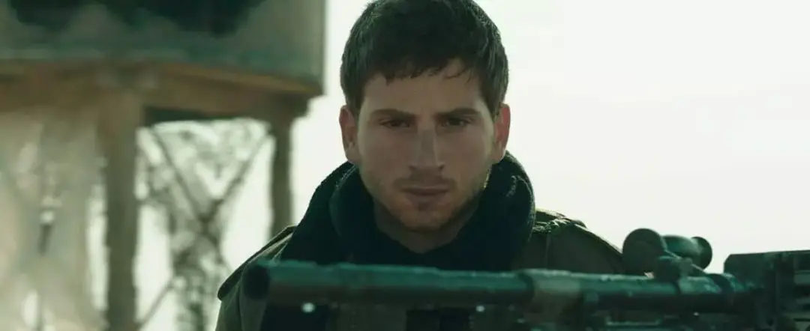
这里看不到满是荷尔蒙的强壮士兵，而是四个很丧、很颓、稚气未脱的小伙子。
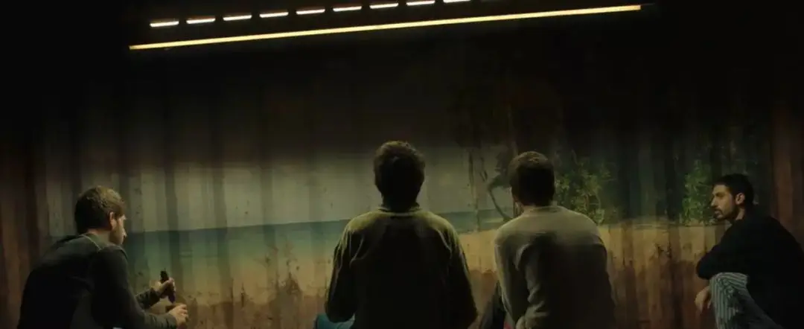
他们做的事情也只是每天审查过往的车辆和行人，或者给缓慢经过的骆驼放行。
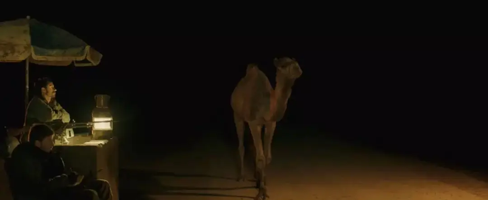
这里的生活和工作索然无味，四个年轻人只能寄情于美国流行音乐，或者在荒漠中跳狐步舞。
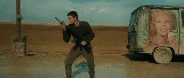
一次安检中，要过检的车上载着四个年轻人，开车的美丽女孩吸引着乔纳森的目光。
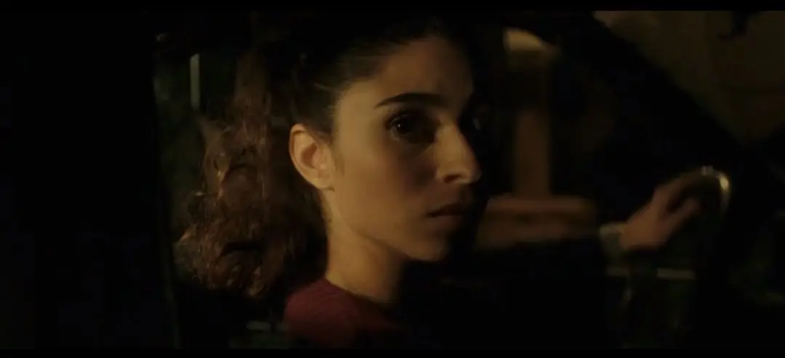
例行检查后准备放行，车子正要开走的时候，女孩发现自己的裙边夹在车门中，就在她开车门的时候，车上掉下一个东西。
大家以为是手榴弹而大叫，乔纳森在慌乱中对着汽车一阵扫射。
瞬间，车子变成了马蜂窝，车上四个有说有笑的年轻人再也没有了响动。
而掉在地上的只是一个啤酒瓶！
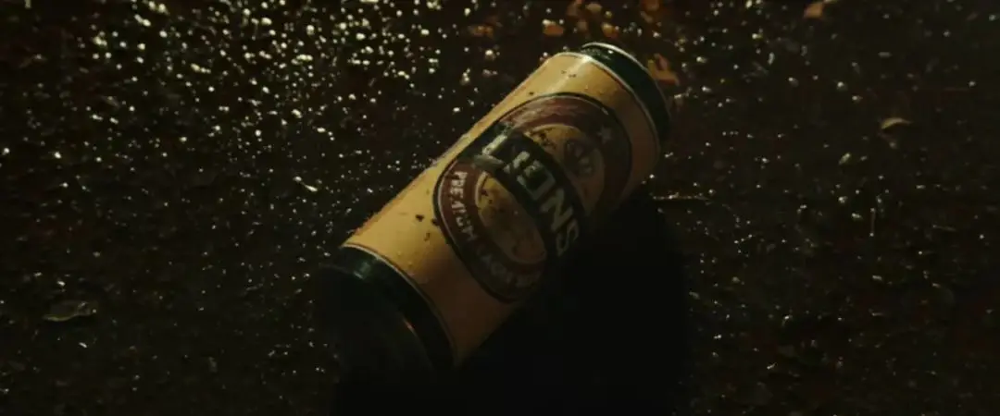
随后，军方将这荒谬的一切都掩埋在土里，但这却成为四个年轻人永远的心理阴影。
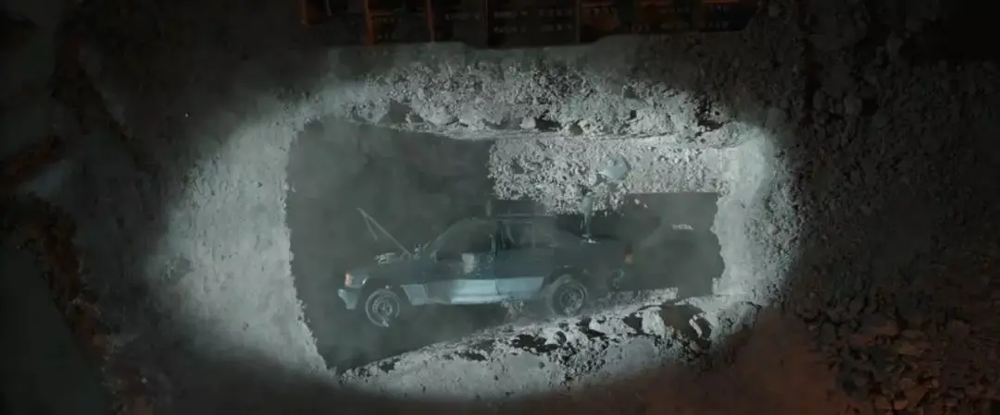
在这样的环境中，他们的心里是完全失衡的。
导演非常擅长使用空间和布景来表现人物的状态，由于身处荒漠，四人所住的集装箱的一侧每一天都在陷入荒漠中。
不断倾斜的集装箱代表着他们不断失衡的心态。
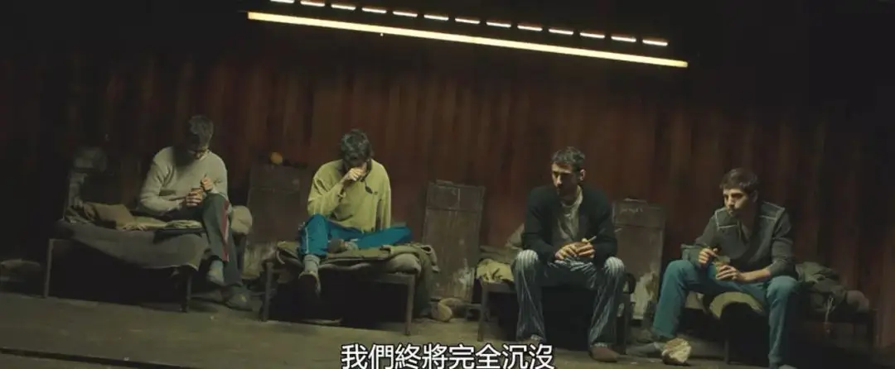
惨剧发生的第二天，乔纳森接到上级命令，需要立即回家。
回家途中，车子为了躲避走在马路中央的骆驼发生交通事故。
就这样，乔纳森这次真的死了！
-03-母亲
最后一幕又回到了室内，导演将空间更加缩小到狭窄的卧室和厨房中。
一天之内，麦可和妻子就像坐过山车一样，首先经历了失去儿子的巨大悲痛，然后是得知儿子还活着时的庆幸，最后是间接害死自己孩子的内疚和绝望。
妻子无法面对这样的悲剧，甚至后悔当初没有选择堕胎，要不然也不会承受如此大的痛苦。
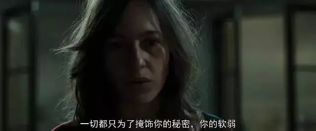
而对于麦可而言，乔纳森的离开是致命性的打击。
在乔纳森的遗物中，他曾用漫画的方式讲述了麦可的故事。
原来麦可年轻时候用妈妈二战时留下来的希伯来《圣经》换了一本色情杂志，这让妈妈精神奔溃。
麦可因为这件事总觉得自己得罪了神。
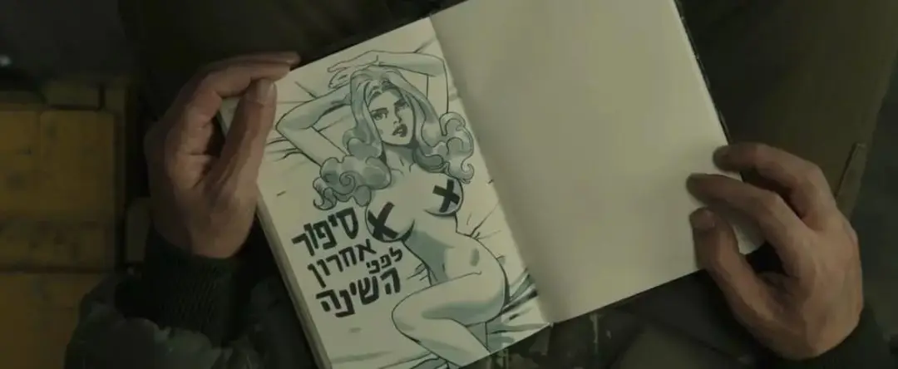
长大后，麦可也曾参军，在军队行进的过程中，本来走在前面的麦可不知出于什么原因，莫名其妙地请求自己的战友走在前面。
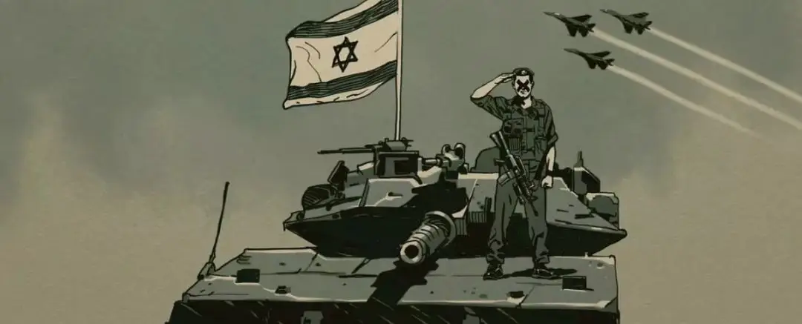
而当战友走在前面的时候，却踩到了地雷，在痛苦的嚎叫中死去。
这一切都发生在麦可的眼前，他没有勇气上前救助自己的战友，眼睁睁地看着他死去。
从此，麦可一直活在自责和软弱中，他认为这是神对他犯错的惩罚。
就在自己快要绝望的时候，妻子告诉他怀孕了，乔纳森的出生成为了麦可继续生活下去的理由。
如今，乔纳森却间接因为麦可而死去，这充满了宿命色彩。
就像三幕都出现的狐步舞那样：「前前，右右，后后，左左，回到原点。」。
不论时间跨度多大，不论自己通过多大的努力去掩藏自己的软弱。
最终，一切都不可思议地回到了原点。
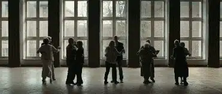
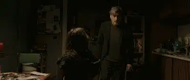
这是一部非常“无力”的电影，也是导演反战的一种独特表达。
记录以色列民族苦难和信仰的希伯来《圣经》在导演眼中成为了沉重的历史包袱，所以导演借着麦可之手，用象征世俗文化的色情杂志去取代希伯来《圣经》。
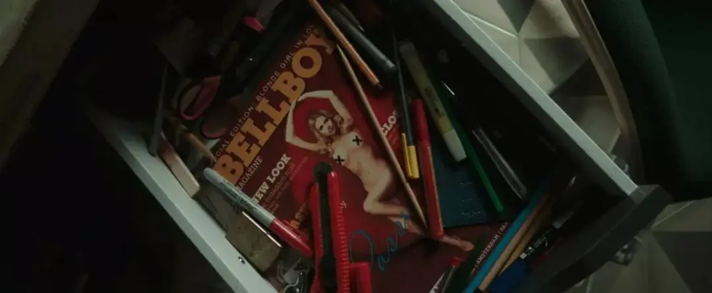
色情女郎、流行音乐成为这些处于战争中年轻人新的心灵港湾。
因此，面对荒谬残酷的战争，导演镜头下的以色列民族不再高举信仰，不再以坚强和盼望的面孔出现在观众的面前。
而是充满了世俗气息的空虚和颓废。
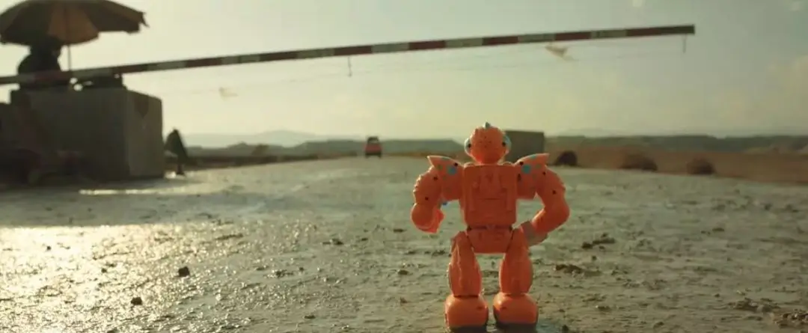
他们眼中的战争和军队充满冰冷，毫无价值。
所以这部电影遭到以色列军方的反感和抗议。
的确，如果以色列军队都是如此丧、如此颓废，这个民族也许早已不复存在。
如果以色列早早抛弃信仰，拥抱世俗世界，那么1400来年流浪在世界各地的以色列民族早已被其他文化同化，更不可能复国。
没有信仰的眼光，面对以色列苦难的历史和充满危机的现状，那一定是绝望的，这正是这部作品走向宿命论的必然原因。
这也是值得我们深思的地方，塞缪尔·毛茨面对的是战争，我们则会面对家庭、工作、生活上的压力和挫败。
处于软弱中，像毛茨那样停止信靠、跌入到宿命的悲观中是一件很正常的事，也是一件很可怕的事。
我们会在悲痛中变得更加自我，自我到忽视身边一切关心你的人，你的世界里只有你的受伤和眼泪。
这会让我们停止寻求帮助和仰望上帝，我们会很本能地拒绝一切他救的方式，当这种悲观的自我走向巅峰的时候，就是我们选择自杀的时候。
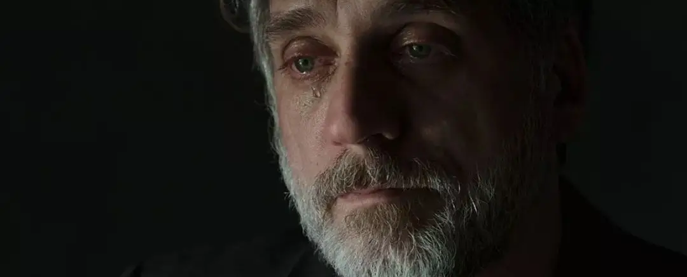
不过这部电影独特的反战表达方式值得我们肯定，也让我们看到了以色列不为人常见的另一面，在长期的战乱中，他们充满了恐惧、软弱和迷茫。
可惜，导演没有给这种绝望找到出路，抛弃过去虽然身子会轻省些，但是那份久经磨砺的力量和盼望也会消失。
他不明白以色列的眼泪唯有上帝能够帮他们擦去！
只有将软弱带到上帝面前，以色列才能得到真正的安慰和力量。
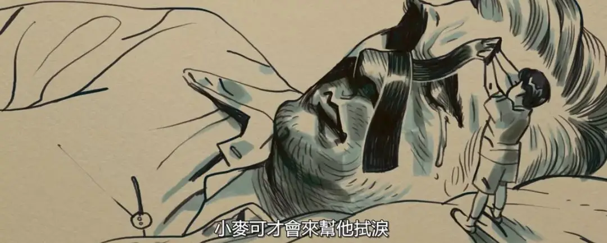
关注并回复：今夜跳舞不打仗
获取电影资源
相关推荐：
奥斯卡最佳外语片《修女艾达》| 历史虽然静默，但都在上帝掌管之下
人！你到底从历史中学到了什么
继《沉默》之后，又一部必刷的信仰力作
这里没有挑逗你眼目情欲的小鲜肉
也没有挑动你肉体情欲的段子
更没有膨胀你今生骄傲的鸡血
我们只在乎那些最质朴真诚的作品
在那里我们才能恢复真正的想象力
我们也坚信这才是我们真正需要的

ID:Six_hundred_hits
长按二维码，一键关注
【六百击】
-END-
电影评论
尽情分享朋友圈

苹果打赏通道
小提示：文末广告是腾讯配送广告，内容与本号无关，但您的每次点击（无需反复点）都会给平台带来几毛收益，欢迎您点击支持六百击。